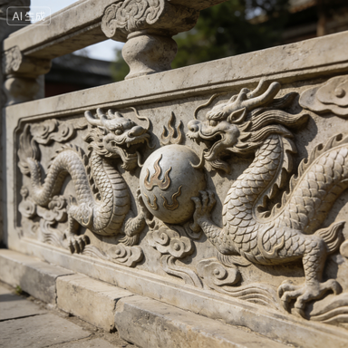

◈ 敞肩拱大拱两端各设两小拱，共四小拱。减轻桥身自重15.3%，泄洪面积增加16%，世界首创敞肩结构，领先欧洲七百年。
◈ 主拱券净跨37.02米，矢高7.23米，采用圆弧拱。由二十八道独立石券并列组成，每道券独立受力，便于维修更换，隋代石拱技术之巅峰。
◈ 仰天石桥侧外沿护石，形如仰天，增强桥体横向整体性。石质坚硬，历经千年风雨，守护桥面边缘，刻有花纹，兼具美观与稳固。
◈ 勾头石拱券锁石，位于拱券外端，防止石券向外倾覆，以腰铁相连。精妙构造保证拱圈横向稳定，体现古代匠师高超的力学智慧。
📜 安济桥·岁月长河
隋·初创
宋·赐名
明清·修缮
1958·大修
1961·国保
1991·世界遗产
指尖触碰时光，品读千年传奇……
🎨 石雕神韵 · 隋唐气象

双龙戏珠
祥瑞护桥

交龙纹饰
婉转流云

兽面饕餮
驱邪镇水

卷草莲花
梵音禅意
赵州桥（安济桥）横跨洨河，由隋代匠师李春督造，距今逾一千四百年，
为世界最古老敞肩石拱桥，被梁思成先生誉为“中国工程界一绝”。其敞肩设计领先欧洲同类结构七百余年，是华夏建筑智慧的不朽丰碑。
🏛️ 营造法式 · 四绝于世
1. 敞肩拱（世界首创）
大拱两端各设两小拱，共四小拱。减轻桥身自重15.3%，泄洪面积增加16%，匠心独运。
2. 二十八道并列拱券
主拱由28道独立石券纵向并列，每道券独立受力，便于维修更换，体现模块化智慧。
3. 横向加固系统
腰铁、铁拉杆、收分技术三重保险，使千年石桥稳如磐石。
4. 浅基明础
桥台置于天然砂砾层，地基沉降极小，历经地震洪水岿然不动。
📖 天下第一桥 · 文明印记
赵州桥不仅是一座交通枢纽，更是隋代科学精神与美学追求的完美结晶。桥上栏板雕刻双龙、饕餮、卷草等纹样，线条刚劲流畅，尽显盛大气象。
1991年，美国土木工程师学会将其评选为“国际土木工程历史古迹”，与金字塔、巴拿马运河并列。历代帝王、文人如唐玄宗、乾隆皆曾驻马题咏，桥畔至今留有古碑数通。
“水从碧玉环中过，人在苍龙背上行”——元代刘百熙的咏桥诗，道尽此桥神韵。今日赵州桥依然横跨洨河，迎送中外来客，成为中华文明走向世界的一张金色名片。